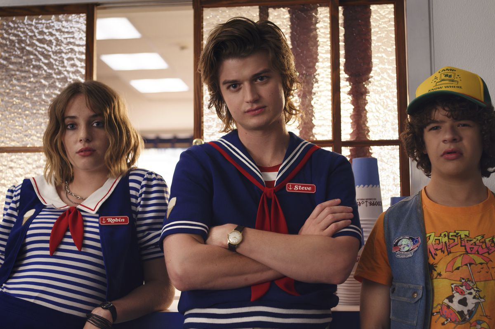
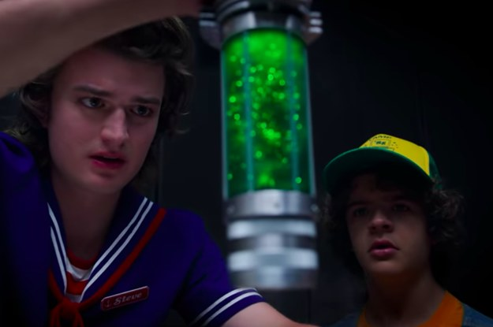

Előzetes:
Kritika
Nem tartom magam egy nagy sorozatjunkie-nak, sőt, ám majdnem pontosan három éve még a megjelenés napján tettem egy próbát a Duffer tesók piszkosul hangulatos, a '80-as évek előtti hódolatával. A Stranger Things iránt érzett rajongásom - kis túlzással nevezhetjük szerelemnek is - azóta sem apadt. Még úgy sem, hogy a második évadról írt kritikámban pedzegettem, hogy a sorozatnak a harmadik szezonra muszáj lesz valami újat húznia, vagy picit bátrabban nyúlnia az addigra már jól ismert eszközeihez. Örömmel jelentem, hogy ez a felfrissülés megtörtént, már ami a körítést illeti mindenképp, hiszen a télies, halloweeni szettinget egy színesebb és üde nyári vakáció váltotta. Hawkins titkai viszont maradtak, és ha picit szőrösszívű lennék, azt mondanám, mit sem változtak - a Stranger Things-szel viszont most se nagyon lehet mellényúlni.
Történet
Az Upside Down pedig kisebb-nagyobb változtatásokkal ugyan, de a megszokottak szerint forgatja fel Elevenék életét. Ám ahogy maga a nyári hangulat, úgy az évad szellemisége is egy fokkal könnyedebb, egyben kevésbé feszes is. Ez kifejezetten tetten érhető az első három, de talán még a negyedik epizód alatt is, melyek a Stranger Things megszokott tempójához és dinamikájához képest ráérősebben indítják el az érdemi történéseket. Az évad első fele gyakorlatilag teljes egészében a tinédzserkorba lépett srácok kapcsolatára, kamaszodására és szerelmi dilemmáira fókuszál, ami ízléstől függően eltérő mértékben szólíthatja meg a nézőket. Persze, a '80-as évek film- és sorozatklasszikusaiból remek érzékkel összeollózott és megidézett a hangulat, a korszak ikonikus zeneszámaival továbbra is állandó jelleggel pörgették a sorozat elhanyagolhatatlan nosztalgiafaktorát. Az internet által is körberajongott srácok továbbra is nagyon szerethetők, viszont amellett nem szabad elmennünk, hogy - főleg ebben az évadban - mennyire parkolópályára kerültek néhányan. Főleg az a Noah Schnapp, akinek azzal együtt volt nagyjából három érdemi jelenete az egész harmadik évadban, hogy az előzőt mind karakterével, mind alakításával majdhogynem egymaga vitte el a hátán, már ami a cselekmény fő szálát illeti. Will epizódszerepei mellett Sadie Sink Maxe ha többször is volt képernyőn, mint korábban, gyakorlatilag kizárólag Eleven mellett jutott szóhoz, Millie Bobby Brown karaktere pedig érthetetlen, hogy miért tart még szinte pontosan ugyanott, mint a második évad idején. Nyilván sarkítok egy kicsit, de néhány csókjelenetet leszámítva semmilyen új élmény nem fűződik a karakterhez, és azt is meg merem kockáztatni, hogy a képességei és a kvázi fegyverként funkcionáló szerepe sokszor visszatartja a cselekményt attól, hogy felérjen az abban rejlő lehetőségekhez. Dustint és mindannyiunk legkirályabb anyukáját, Steve-et az egész szezonra összeboronálták, és gyakorlatilag Hopper meg Joyce mellett főszereplőkké léptek előre a maguk különálló szálával. Talán ezzel is függhet össze, hogy amennyire szétesik és jelentéktelenné válik a "party", tehát a srácok csoportja a mostani évadban, annyival lett több tere sziporkázni Winona Ryder és David Harbour párosának, akiket egyszerűen végtelenül szórakoztató nézni minden egyes jelenet során. A Stranger Things soha nem a mesteri hozzáértéssel kezelt karaktereiről volt híres, a maguk szerepében mégis remekül tudnak működni, Joyce és Hopper pedig organikusan járultak hozzá a nagyjából három-négy nagyobb szál összefűzéséhez. Dustinékhez egyébként hozzácsaptak egy vadonatúj karaktert is, méghozzá Uma Thurman és Ethan Hawke lányát, Maya Hawke-ot, neki és Joe Keery-nek pedig az évad egyik legkiválóbb, végtelenül emberi és magával ragadó jelenetét köszönhetjük. Oldalukon Gaten Matarazzóval, aki - amikor csak Dustin jelen van a képernyőn - a szememben továbbra is lopja a showt, főleg, hogy továbbra is a széria egyik legerősebb karakteréről beszélünk, aki fokozatosan képes megújulni, és Matarazzo is egyre többet mutat meg színészi képességeiből. Mindeközben Natalia Dyer és Charlie Heaton pontosan, de komolyan, egy az egyben ugyanazt a nulla kémiával, de valamilyen megmagyarázhatatlan oknál fogva működő párost hozza, amit az első két évadban is. Talán még Nancy és Jonathan is több szerephez jut, mint korábban, ám a jeleneteik többsége nélkül is valószínűleg pontosan ugyanúgy haladna a cselekmény az útján, mint azokkal együtt. Szó se róla, volt egynéhány merész húzás a harmadik évadban, az utolsó epizód pedig főleg minden rakétáját előtte (ha már július negyedikén járunk), amit csak lehetett, addig pedig az a Dacre Montgomery hozott néhány piszkosul erős jelenetet, akit Maxszel együtt az előző évadban bevezettek ugyan, de az égvilágon semmit nem kezdtek velük később. Az ilyesfajta félbehagyott szálak sajnos az idei szezonra is jellemzőek voltak, nem egy olyan jelenet vagy esetleges mellékszál van, amit okosan belebegtetnek Dufferék, de aztán később még említés szintjén sem látjuk azokat viszont - gondolok itt az olyan apróságokra, mint Will és Mike konfliktusa, ahol organikus, ámde meghökkentő módon tudunk meg egy új információt az egyik karakterről. Csak azért, hogy a következő jelenetben mintha mi se történt volna, úgy haladhassunk tovább a sztoriban. A srácok közötti interakció egyébként magasan a mostani évad egyik leggyengébb aspektusa volt, amit óriási csalódásként élnék meg akkor, ha az utolsó 2-3 epizódra nem rántották volna úgy össze a szezont, hogy azt mondhassam, a finálé a komplett Stranger Things talán legkiválóbbja lett.
 